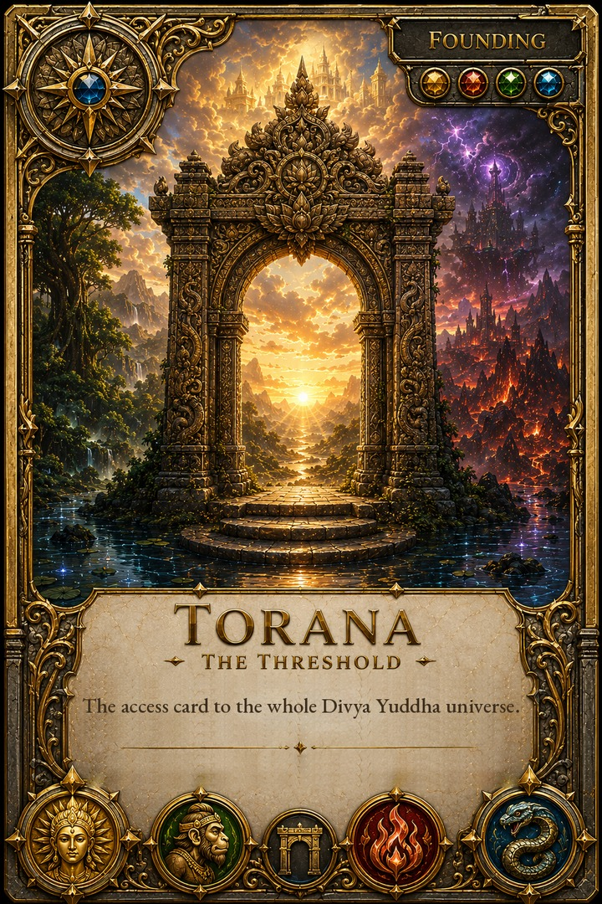

The rite admits you to nothing you did not already own — it is only your name at the gate.
REGISTER FOR THE PRESALE BUY YOUR COIN
reading balance…

TORANA — The Access Card
One card. The whole launch set, playable.
The Rite is not yet open. Claims begin on the owner's word, and this page will announce it.